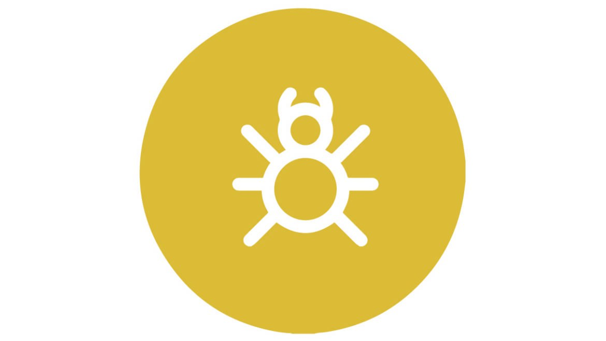

MUĞLA DELTA İLAÇLAMA
Bitler
Muğla Delta İlaçlama

Bitler
Bit (çoğul: bitler ) yaklaşık olarak Phthiraptera takımından, 5.000 türü bulunan kanatsız böceklerdir. Bitler tek delikliler, pangolinler, yarasalar ve memeli deniz hayvanları dışındaki her tür kuşlar ve memelilerde yaşayabilen sıcakkanlı zorunlu parazitlerdir. Bitler tifüs gibi hastalıkların taşıyıcısıdırlar.
Çiğneyici bitler konakçıların tüyleri ya da kılları arasında yaşar ve deri ile diğer atıklarla beslenirler; emici bitler ise konakçıların dersini delerek kanları ve diğer salgılarıyla beslenirler. Genellikle bütün hayatlarını tek bir konakçı üzerinde geçirirler ve sirke adıyla da bilinen bit yumurtalarını kıllara veya tüylere yapıştırırlar. Yumurtaların içindeki nimfa tamamen yetişkin olmadan önce üç defa tüy dökerler ki, tüm bu süreç yaklaşık olarak dört hafta sürer.
İnsanlar üzerinde konaklayabilen üç tür bit bulunmaktadır. Bunlar baş biti, vücut biti ve kasık bitidir. Vücut biti bilinen herhangi bir böceğin en küçük genomuna sahiptir. Bu nedenle model canlı olarak sıkça kullanılmış ve çokça araştırılmıştır.
Bitler en azından Orta Çağa kadar tüm insan topluluklarında bulunmuştur. Halk hikayelerinde, The Kilkenny Louse House gibi şarkılarda ve James Joyce’un Finnegans Wake adlı romanında bile söz edilmiştir. Genellikle bu tür alanlarda kendilerine psikiyatrik bozukluk olan sanrısal parazitozunda yer bulmuşlardır. Bit, mikroskobinin ilk konularından biriydi ve Robert Hooke’un 1665 yılında yayımladığı Micrographia kitabında böcekten söz edilmişti.
Tanımlama
Emici bitler boyları 0,5 ila 5 mm (0,02 ila 0,20 inç) arasında değişen küçük, kanatsız böceklerdir. Dar başları ve oval düzleşmiş gövdeleri vardır. Hiçbirisinde ocelli (basit göz-pigment çukuru) yoktur ve bileşik gözleri ya küçük ya da eksiktir. Antenleri üç ila beş kısa bölüm halindedir ve başlarına geri çekilebilen ağız parçaları delme ile emmeye uyarlanmıştır. [4] Bağırsağının başlangıcında cibarial pompa olup, başın üst derisinin içine eklenen kaslar tarafından güçlendirilmektedir. Ağzının parçaları dişli bir hortumdan oluşmuştur ve bu hortumun içi keskin silindir şeklinde tükürük kanalı (ventral) ve bir beslenme kanalı (dorsal) olarak düzenlenmiştir. [5] Göğsünün bölümleri kaynaşmış, karın bölümleri ayrılmış ve altı bacağının her birinin ucunda büyük bir pençe vardır. [4]
Çiğneyici bitler de yassıdır ve uzunlukları 0,5 ila 6 mm (0,02 ila 0,24 inç) arasında değişmekte olup diğer tür bitlerden biraz daha büyük olabilirler. Vücut yapıları emici bitlere benzer ancak başları göğüslerinden daha kalındır ve tüm türlerde gözler bileşiktir. Hiçbir şekilde basit göz (ocelli) yoktur ve ağzının bölümleri çiğnemek için uyarlanmıştır. Duyargaları yani antenleri yine üç ila beş arasında bölümden oluşmakta olup Ischnocera alt sınıfında biraz daha ince Amblycera alt sınıfında ise çomak şeklinde biçimlidir. Bacaklar kısa ve sağlam olmakla birlikte bir ya da iki pençe ile son bulurlar. Bunların birçok türü her bir ev sahibi türe özgü olup onunla birlikte gelişmişlerdir. Genellikle kriptik (saklanma) olarak yaşadıkları ev sahiplerinin tüy ya da postunun rengine uyacak şekilde renklidirler.
Biyoloji
Bitler iki gruba ayrılırlar. Bunlardan emici bitler ev sahiplerinin yağ salgıları ile diğer vücut sıvılarını emerek beslenirler. Çiğneyici bitler ise leşçidirler ve ev sahiplerinin cildinde tüy ya da saç parçaların ile veya atıklar ile beslenirler. Özgü türler çoğunlukla belirli tür canlılar üzerinde ya da bazı durumlarda vücudun belirli bölümlerinde bulunurlar. Bazı hayvanların on beşe kadar farklı türe ev sahipliği yaptığı bilinmekle birlikte, memelilerde bu sayı bir ila üç arasında, kuşlarda ise iki ila altı tür arasındadır. Örneğin insanlarda saç, vücut ve kasık bitleri farklı türlerdir. Bitler genellikle ev sahibinin üzerinden çıkarıldığı takdirde uzun süreli olarak yaşayamazlar. [7] Çiğneyici bitlerin bazı türleri vücutlarındaki bakteriyositlerde simbiyotik bakterilere ev sahipliği yaparlar. Bunlar sindirimine yardımcı olabilir, çünkü böcek onlardan yoksun bırakılırsa ölecektir. Ev sahibi ölürse bit fırsatçı bir şekilde leşe gelen sinekleri gezinti yapmak için forez olarak kullanabilir ve yeni bir ev sahibi bulmaya çalışır.
Bir bitin rengi soluk bejden koyu griye doğru değişir; bununla birlikte, kanla besleniyorsa, oldukça koyu hale gelebilir. işi bitler genellikle erkeklerden daha yaygındır ve bazı türlerde partenogenetik bir yapı vardır. Bir bit yumurtasına genellikle sirke (nit) denir. Birçok bit türü, yumurtalarını ev sahibinin tüylerine özel tükürük ile tutturur ve bu tükürüğün saç bağından güçlü çözücüler kullanılmadan parçalanması oldukça zordur. Ancak kuşlarda yaşayan bitler, yumurtalarını tüylerin iç kısmına gagaları ile bakım yaptıklarından dolayı kısmen bırakabilirler. Yumurtalar için genelde kuşların gagalarının erişemediği yerleri seçerler. Canlı bit yumurtaları soluk beyazımsı renkte olmaya eğilimli iken, ölü bit yumurtaları daha sararmış bir haldedirler.
Bitler ekzopterigottur ve nimfalar, yetişkinlerin minyatür bir versiyonu olarak doğarlar. Genç yumurta genellikle kuluçkadan sonra bir ay içinde son yetişkin formuna ulaşmadan önce üç kez tüy döker
Bizimle iletişime geçin